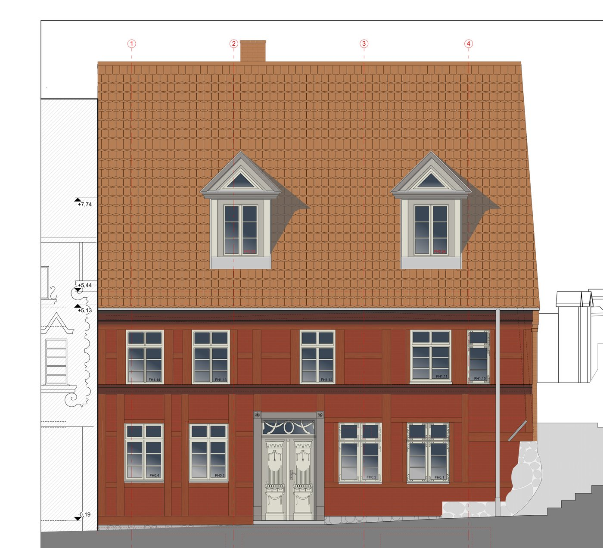

Gadebusch
Ein Eckhaus in Fachwerkbauweise, direkt an einer Treppe in die Altstadt: dunkel gestrichen, die Fensterläden geschlossen, die Haustür vom Wetter gezeichnet. Über Jahre hatte sich die Fassade in ein müdes Braun zurückgezogen — der Bestand war intakt, aber die Handschrift des Hauses kaum noch zu lesen.
Als denkmalgeschütztes Wohn- und Geschäftshaus mit angeschlossener Manufaktur unterlag jeder Eingriff der Abstimmung mit der Denkmalpflege. Gemeinsam mit Architekten und Restauratoren wurde ein historischer Farbkanon für Fassade, Fachwerk und Dach recherchiert — bis hin zum genauen Farbton der Biberschwanz-Eindeckung und der Gefache.
Aus dem gedämpften Bestand wurde ein kräftiger, warmer Rotton nach historischem Vorbild, gerahmt von hellen Fenstern und einer neu gefassten Tür. Das Haus steht heute wieder sichtbar an seiner Ecke — bewohnt, genutzt, und mit einer Fassade, die seine Geschichte zeigt statt sie zu verstecken.

„Ein Haus wie dieses erzählt weiter, was man ihm ansieht — man muss es nur wieder sprechen lassen.“